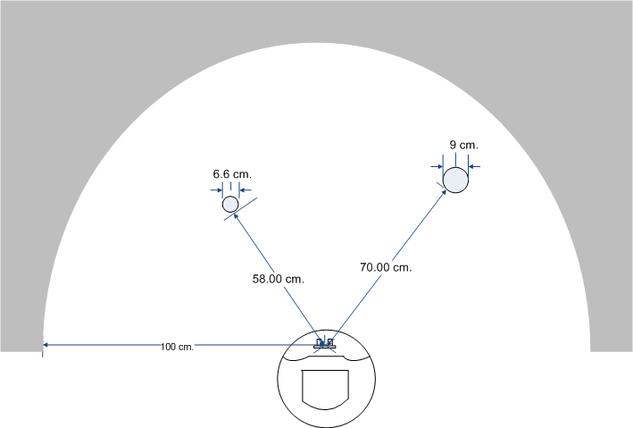
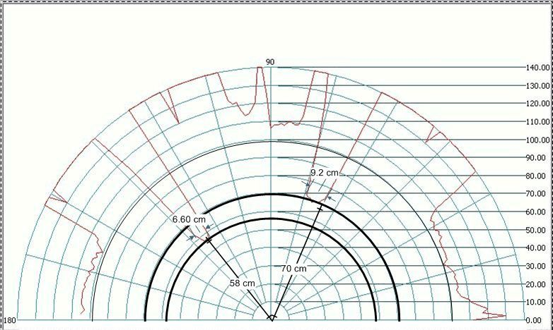
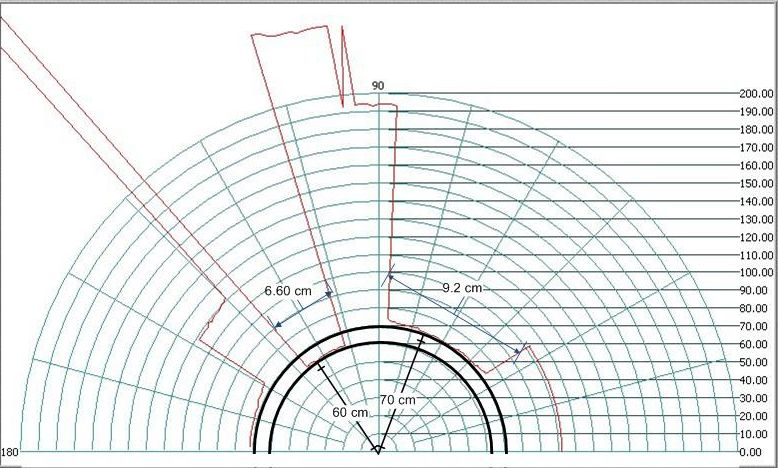

This lab will have you integrate the Ping sensor, IR distance sensor, and servo in order to count objects and determine their size. You will also use Bluetooth to transmit your results back to Putty.
Download the following files to a single folder on your U: drive (right-click and select ‘Save Target As’. Alternatively, download the zipped folder at the bottom of the page).
This lab is focused more on data analysis than microcontroller functionality. Only with data analysis will we be able to leverage sensor data to make decisions. The initial analysis for this lab is oriented towards identifying the number of objects in front the VORTEX. From Lab 6 & 7, both the IR sensor and Ping sensor always return a distance measurement in centimeters. Object discrimination analysis requires us to separate data related to the actual objects from the data related to background.
Object recognition is done by separating the object relevant distance measurements from the background noise. For this lab we have arbitrarily chosen the smallest object to be of interest. Define the size of an object as its radial size (Ex. If you start seeing an object at servo angle 30 degrees, and stop seeing it at 35 degrees, its size is 5 degrees). Computing the actual dimensions of an object's profile with trigonometry would be a logical evolutionary step, but we do not need this calculation for this semester. Of interest, is the numerical value for size in terms of the number of degrees within the sweep the object appeared. Determining the center and accounting for the breadth of the cone of sound the Ping sensor generates or the beam width of the IR sensor, we can approximate the angular location of the object's side. This will be helpful when determining what direction to move the VORTEX in the upcoming project. The IR sensor produces a much tighter beam than the Ping, so discrimination with IR sensor is much more precise.
To put the task in perspective as well as the qualities of the Ping and IR distance sensors, figures are provided below that describe a test environment and the output generated by both the IR sensor and Ping sensor. The operational performance of the two sensors should be readily apparent from these figures.

Figure 1: A Possible object discrimination environment. Gray area at 1 meter away is background clutter.

Figure 2: Radial plot presenting data collected with the IR distance sensor measuring an environment similar to Figure 1.
Annotations signify actual physical dimensions measured with a ruler.

Test environment was a very close approximation to that used for Figure 2.
Annotations signify actual physical dimensions measured with a ruler.
Big Picture
The project will require locating objects and making judgments based on size of detected objects. The project will introduce an additional challenge in that by moving the VORTEX's position the new location will affect how to interpret the data collected from the sensor sweeps.
Requirements: Sweep with both the Ping sensor and IR distance sensor over the 180 degree range of the servo, taking distance measurements from both sensors every 2 degrees and transmitting the data over Bluetooth to Putty.
An example of
the output sent to Putty should look something like the following example:
Degrees IR Distance (cm) Sonar Distance (cm)
0 120 324
2 123 330
4 119 363
6 40 40
8 40 40
10 40 41
…
The test Objects being scanned will be 35 to 80 cm from the robot. Objects will be placed far enough apart to provide a measurable gap between them. This gap may not be measurable by the Ping sensor, but the IR distance sensor will generate data consistent with a physical gap.
Requirements:Extend your program from Part I to determine and display both the number of objects found by each sensor and the smallest object found by each sensor. After the sweep, point the turret to the center of the smallest object.
While performing the sweep, assign an index for each object (1 for the first object encountered, 2 for the next, etc). For each sensor, display on the LCD the index of the object can be considered the smallest based on each sensor's data.
Objects being scanned will be 35 to 80 cm from the robot. Objects will be placed far enough apart to provide a measurable gap between them. This gap may not be measurable by the Ping sensor, but the IR distance sensor will generate data consistent with a physical gap.
Demo the program execution to your TA.
Fill out a lab feedback form: Online Form
|
Files |
Description |
|
Files required for lab 9 |
|
|
Evaluation form for Lab 9 |
|
|
Tell us what you think of the lab (feedback forms) |
{kind=link}